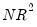

Before you use an estimated equation for statistical inference (e.g. hypothesis tests and forecasting), you should generally examine the residuals for evidence of serial correlation. EViews provides several methods of testing a specification for the presence of serial correlation.
Two other tests of serial correlation—the Q-statistic and the Breusch-Godfrey LM test—overcome these limitations, and are preferred in most applications.
If you selecton the equation toolbar, EViews will display the autocorrelation and partial autocorrelation functions of the residuals, together with the Ljung-Box
Q-statistics for high-order serial correlation. If there is no serial correlation in the residuals, the autocorrelations and partial autocorrelations at all lags should be nearly zero, and all
Q-statistics should be insignificant with large
p-values.
Note that the p-values of the
Q-statistics will be computed with the degrees of freedom adjusted for the inclusion of ARMA terms in your regression. There is evidence that some care should be taken in interpreting the results of a Ljung-Box test applied to the residuals from an ARMAX specification (see Dezhbaksh, 1990, for simulation evidence on the finite sample performance of the test in this setting).
Selecting carries out the Breusch-Godfrey Lagrange multiplier test for general, high-order, ARMA errors. In the dialog box, you should enter the highest order of serial correlation to be tested.
The null hypothesis of the test is that there is no serial correlation in the residuals up to the specified order. EViews reports a statistic labeled “F-statistic” and an “Obs*R-squared” (—the number of observations times the R-square) statistic. The statistic has an asymptotic

distribution under the null hypothesis. The distribution of the
F-statistic is not known, but is often used to conduct an informal test of the null.
See “Serial Correlation LM Test” for further discussion of the serial correlation LM test.
Selecting for the first 12 lags from this equation produces the following view:
The correlogram has spikes at lags up to three and at lag eight. The Q-statistics are significant at all lags, indicating significant serial correlation in the residuals.
Selecting and entering a lag of 4 yields the following result (top portion only):
The test rejects the hypothesis of no serial correlation up to order four. The Q-statistic and the LM test both indicate that the residuals are serially correlated and the equation should be re-specified before using it for hypothesis tests and forecasting.


 . The usual approach to handling this problem is to place bounds on the critical region, creating a region where the test results are inconclusive. Second, if there are lagged dependent variables on the right-hand side of the regression, the DW test is no longer valid. Lastly, you may only test the null hypothesis of no serial correlation against the alternative hypothesis of first-order serial correlation.
. The usual approach to handling this problem is to place bounds on the critical region, creating a region where the test results are inconclusive. Second, if there are lagged dependent variables on the right-hand side of the regression, the DW test is no longer valid. Lastly, you may only test the null hypothesis of no serial correlation against the alternative hypothesis of first-order serial correlation.